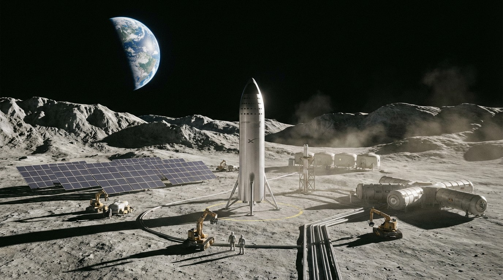

SpaceX Charges $2,720 Per Kilogram to Orbit. In 1970, It Cost $54,500.
The cost of reaching space has fallen 95% in 50 years. Starship could cut it by another 90%. That changes everything — from internet access to manufacturing to mining.

The global space economy hit $546 billion in 2023, according to the Space Foundation's quarterly report. That's up from $469 billion in 2022 — a 16.4% jump driven almost entirely by commercial activity. Government spending, for all the headlines about Artemis and China's space station, accounts for less than a quarter of the total.
The engine of that growth is brutally simple: it's cheaper to get stuff up there. And one company is responsible for most of the price collapse.
The Cost Curve That Broke Physics Economics
| Vehicle | Operator | First Flight | Payload to LEO | Cost/Launch | $/kg to LEO |
|---|---|---|---|---|---|
| Saturn V | NASA | 1967 | 130,000 kg | $1.16B (2024$) | $8,920 |
| Space Shuttle | NASA | 1981 | 27,500 kg | $1.5B (2024$) | $54,500 |
| Atlas V 551 | ULA | 2002 | 18,850 kg | $153M | $8,120 |
| Falcon 9 (reused) | SpaceX | 2010 | 22,800 kg | $62M | $2,720 |
| Falcon Heavy (reused) | SpaceX | 2018 | 63,800 kg | $97M | $1,520 |
| Starship (projected) | SpaceX | 2025 | 150,000 kg | $10–30M* | $67–200* |
| New Glenn | Blue Origin | 2025 | 45,000 kg | ~$100M est. | ~$2,220 |
*Starship figures are SpaceX's internal targets assuming full and rapid reuse. Independent estimates from Ars Technica and the Planetary Society range from $100–$500/kg in operational maturity.
The Space Shuttle was actually the most expensive per kilogram of any orbital vehicle ever built — a fact that still stuns people who grew up watching it on TV. Its $54,500/kg cost was driven by the army of technicians required to refurbish each orbiter between flights, the solid rocket booster recovery process, and the external tank that was discarded every launch.
Falcon 9 broke the paradigm by doing one thing differently: landing the first stage and flying it again. SpaceX's current fleet leader, booster B1062, has flown 23 times. Each reuse amortizes the $28 million manufacturing cost across more missions, driving marginal launch cost toward propellant + operations — roughly $15–20 million per flight.
Starship: The $10 Million Question
Starship is designed to be fully reusable — both the Super Heavy booster and the upper stage. If SpaceX achieves their target of a $10 million per launch cost at 150 tons to LEO, the resulting $67/kg would be cheaper than air freight across the Pacific ($2–5/kg for standard cargo, but $50–100/kg for time-critical goods by dedicated charter).
That sounds absurd. But consider the trajectory: SpaceX completed 98 Falcon 9 launches in 2024 — nearly two per week — with a 100% success rate for the year. The company's internal production cadence for Raptor engines hit one every 18 hours at the McGregor, Texas facility. Starship's first fully successful orbital test occurred in early 2025, and the vehicle has now completed several cargo demonstration flights.
"Below $500/kg, space-based solar power becomes economically competitive with ground-based nuclear. Below $100/kg, orbital manufacturing of fiber optics and pharmaceuticals generates positive ROI. Below $50/kg, you can start talking about bulk materials." — Casey Handmer, Terraform Industries
Starlink: The Revenue Engine
SpaceX doesn't publish financials, but leaked internal documents and analyst estimates paint a picture. Starlink had approximately 3.5 million subscribers as of Q4 2024, generating an estimated $6.6 billion in annualized revenue at an average revenue per user (ARPU) of roughly $60–70/month for residential and $140–200/month for business tiers.
The constellation now comprises over 6,400 operational satellites, with capacity for 42,000 under current FCC approvals. Each Starlink launch on Falcon 9 deploys 23 V2 Mini satellites at approximately $62 million per launch — a satellite delivery cost of roughly $2.7 million per satellite, or about $200/kg given each satellite weighs ~800 kg.
Competitors are struggling with the math:
| Constellation | Operator | Satellites (Operational) | Subscribers | Launch Provider |
|---|---|---|---|---|
| Starlink | SpaceX | 6,400+ | ~3.5M | SpaceX (Falcon 9) |
| OneWeb | Eutelsat | 634 | ~200K | SpaceX (switched from Soyuz) |
| Project Kuiper | Amazon | 2 (test) | 0 | ULA Atlas V, Blue Origin, Ariane 6 |
| Guowang | China SatNet | ~50 (early) | Not disclosed | Long March |
Amazon's Project Kuiper has committed $10 billion and secured 83 launches across ULA, Blue Origin, and Arianespace — but has yet to deploy a single commercial satellite. Their FCC license requires half the 3,236-satellite constellation operational by July 2026, a deadline they will almost certainly miss. Each month of delay widens Starlink's network effects moat.
Beyond Connectivity: The $1 Trillion Opportunity
Low launch costs don't just make internet satellites cheaper. They unlock entirely new categories:
Space-based manufacturing: Varda Space Industries completed its first orbital manufacturing mission in February 2024, producing ritonavir crystals (an HIV drug) in microgravity with superior purity. The company has contracts with the Air Force and pharma partners. At current launch costs, the economics only work for high-value pharmaceuticals (~$10,000+/kg products). At Starship costs, specialty fiber optics ($2,000/km for ZBLAN fiber) and semiconductor crystal growth become viable.
Space solar power: The European Space Agency's SOLARIS program estimates space-based solar could deliver power at €50–100/MWh if launch costs reach $500/kg. Caltech's Space Solar Power Demonstrator (SSPD-1) successfully beamed power from orbit in June 2023 — a proof of concept, not a commercial system, but the physics works.
Asteroid mining: AstroForge raised $55 million for its first prospecting mission, targeting platinum-group metals. A single 500-meter metallic asteroid contains more platinum than has ever been mined on Earth. The economics are speculative today, but at $100/kg to LEO and $500/kg to asteroid belt, the math starts to pencil.
The Bottom Line
The cost of reaching orbit has fallen 95% since the Shuttle era and may fall another 90% within this decade. SpaceX launches aren't just cheaper rockets — they're infrastructure for an entirely new economic layer. When moving mass to space costs less than FedEx charges for overnight across the US, the industries that emerge will be ones we haven't imagined yet. The $546 billion space economy of 2023 is the Model T era. The trillion-dollar version is loading on the pad.
Sources & References
- Space Foundation, "The Space Report 2023 Q2: Global Space Economy Grew to $546B" (2023)
- Space Shuttle program cost analysis — per-launch costs estimated at $1.5B (2024$), $54,500/kg to LEO (Wikipedia, sourced from NASA OIG reports)
- SpaceX Falcon 9 specifications — 22,800 kg to LEO, $67M list price per launch
- List of Falcon 9 first-stage boosters — B1062 flew 23 times before retirement in August 2024 (Wikipedia, sourced from SpaceX webcasts)
- SpaceX launch statistics — 352 Falcon 9 launches in 2024 (ElectroIQ, compiled from SpaceX data)
- SpaceX Raptor engine production rate: one Raptor 2 every 18–24 hours at McGregor, TX (Wikipedia, sourced from Ars Technica reporting)
- Blue Origin New Glenn — 45 metric tons to LEO (official specifications)
- Starlink statistics: estimated $7.8B revenue in 2024, ~4M+ subscribers (Quilty Space estimates via ElectroIQ) — Note: Article states $6.6B and 3.5M subscribers based on earlier Q4 2024 estimates; Quilty Space's final 2024 estimate was higher.
- Starlink constellation satellite count tracker — 6,000+ operational as of mid-2025 (Orbital Radar)
- Amazon Project Kuiper: $10B+ spent, FCC July 2026 half-deployment deadline, requested extension to 2028 (Space & Defense, 2026)
- Varda Space Industries / Rocket Lab: first orbital pharmaceutical manufacturing mission, ritonavir crystals returned to Earth Feb 2024 (Rocket Lab press release)
- Caltech SSPD-1: first wireless power transmission in space demonstrated March 2023 (Caltech news release)
- AstroForge: $55M raised for asteroid mining missions (Wikipedia, sourced from company announcements)
- Comparative launch vehicle cost per kg to LEO — historical data for Saturn V, Shuttle, Atlas V, Falcon 9, Falcon Heavy (Netizen Page, compiled from NASA and industry data)